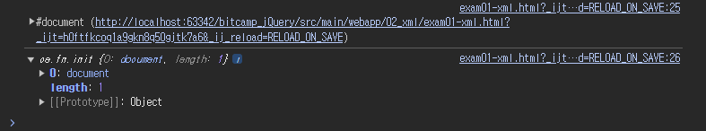

- XML(Exensible Markup Language)은 데이터를 구조호하고 저장하기 위한 마크업 언어이다.
- XML은 데이터의 계층 구조를 정의하고, 데이터와 메타데이터를 표현하는데 사용
결국에는 그냥 데이터라고 보면 된다!
- XML 형식
<?xml version="1.0" encoding="UTF-8"?> <!-- XML 선언 --> <school> <subject> <title>Javascript+jQuery+Ajax</title> <time>매주 월/수/금 오후 7시00분~10시00분</time> <teacher>홍길동</teacher> </subject> </school> - JSON 형식
{ "school": { "subject": { "title": "Javascript+jQuery+Ajax", "time": "매주 월/수/금 오후 7시00분~10시00분", "teacher": "홍길동" } } }
- JSON과 XML의 차이점
JSON XML JSON은 더 간결하고 읽기 쉬운 형식을 가지고 있다ㅏ. XML은 태그와 속성으로 데이터를 표현하므로, 비교적 더 많은 문서 구조와 메타데이터를 포함할 수 있다 JSON은 XML보다 데이터 용량이 작을 수 있다. XML은 태그를 많이 포함하므로 데이터의 양이 많아질 수 있다.
- data
- ajax 요청으로 반환된 데이터이다.
- 문자열 또는 XML 등의 형식이다.
- 데이터를 꺼내려면 DOM 또는 JavaScript를 사용해야 한다.
- $(data)
- jQuery 함수 $()를 사용하여 데이터를 jQuery 객체로 변환하는 것이다.
- ajax로 가져온 데이터를 jQuery 객체로 변환하여 jQuery 함수를 사용할 수 있게 한다.
<!DOCTYPE html>
<html>
<head>
<meta charset="UTF-8">
<title>Document</title>
<link rel="stylesheet" href="../css/common.css">
<link rel="stylesheet" href="../css/reset.css">
</head>
<body>
<h1 class="title">$.ajax() 함수를 사용한 XML 데이터 읽기 (1)</h1>
<div class="exec">
<input type="button" id="mybtn" value="txt파일 가져오기">
</div>
<div class="console" id="result"></div>
<script type="text/javascript" src="https://code.jquery.com/jquery-3.7.1.min.js"></script>
<script>
$(function(){
$('input#mybtn').click(function(){
$.ajax({
type: 'get',
url: '../xml/xml01.xml',
dataType: 'xml',
success: function(data){ // ajax가 성공하면 호출
console.log(data);
console.log($(data));
let title = $(data).find('title').text();
let time = $(data).find('time').text();
let teacher = $(data).find('teacher').text();
let div = $('<div/>');
let p1 = $('<p/>').append(title);
let p2 = $('<p/>').append(time);
let p3 = $('<p/>').append(teacher);
div.append(p1).append(p2).append(p3);
$('#result').append(div);
},
error: function(e){ // ajax 요청이 실패하면 호출된다.
console.log(`${e.status} ${e.statusText}`);
}
});
});
});
</script>
</body>
</html>
- success 후 data와 $(data)의 값

data는 원시 XML 데이터이고,$(data)는 jQuery 객체로 변환된 XML 데이터이다.
- $(data)를 통해 jQuery 객체로 변환하고, find()를 통해 해당 객체의 key를 찾아 value를 저장한다.